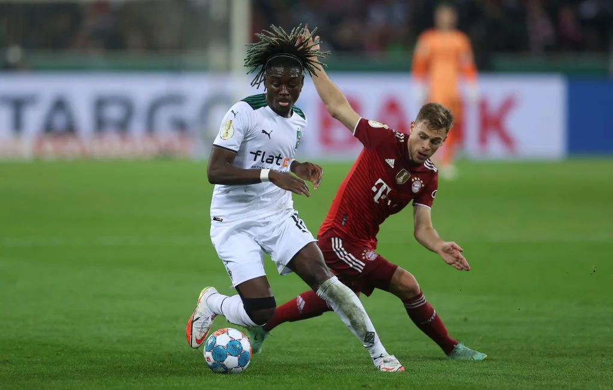
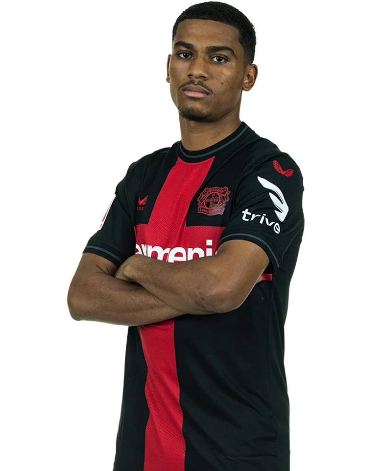
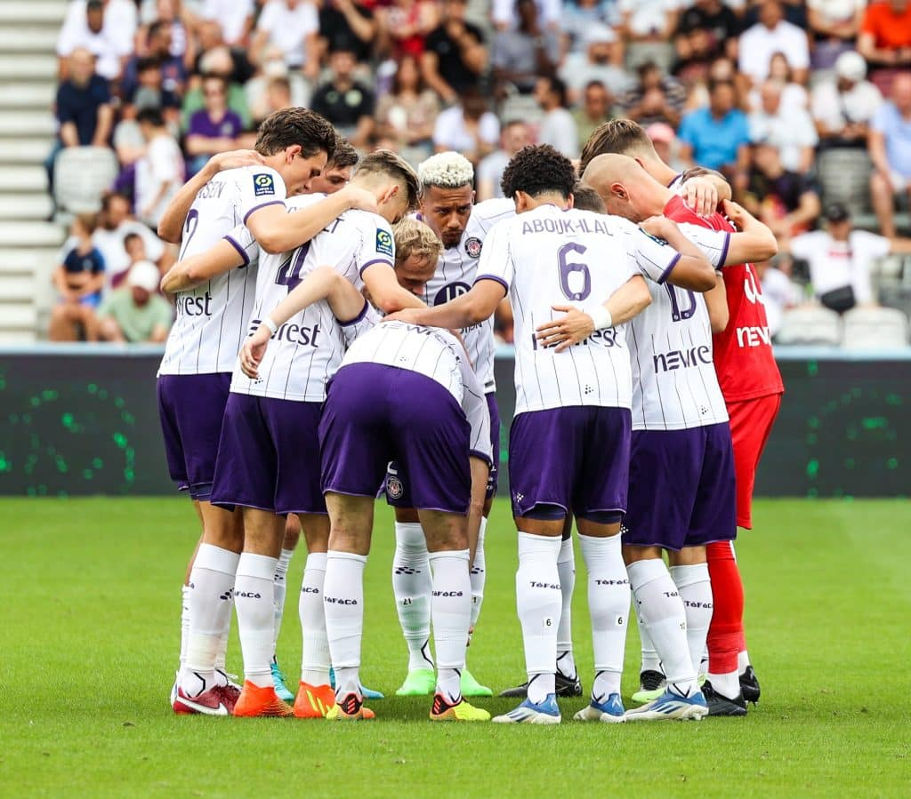
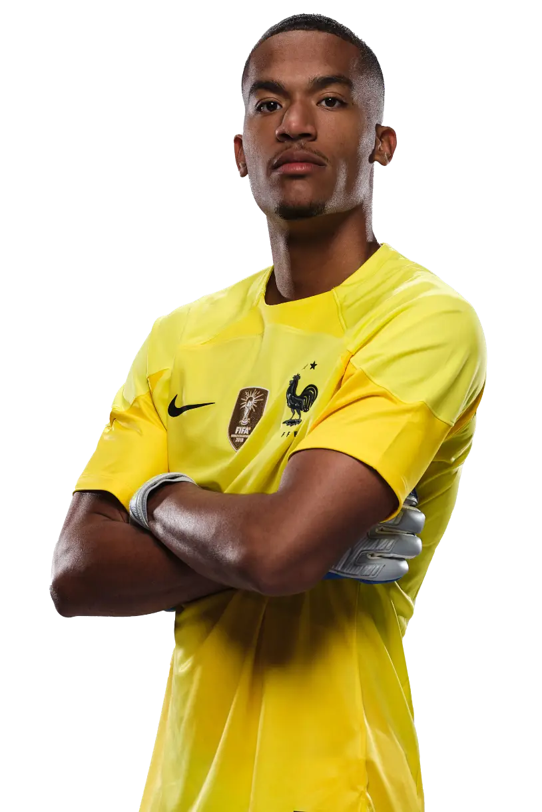

Kouadio Emmanuel Koné
Kouadio Koné, signé professionnel par le Toulouse Football Club en 2018, a marqué son parcours par une ascension rapide. En juin 2021, il a rejoint le Borussia Mönchengladbach, où son talent et sa polyvalence ont renforcé la ligne médiane de l'équipe allemande. Jeune joueur prometteur, Koné représente l'avenir avec sa capacité à s'adapter à différents styles de jeu.Valeur marchande actuelle : 35 Millions
Manu Koné


Wissam Ben Yedder
Wissam Ben Yedder, joueur professionnel, a débuté sa carrière au sein du Toulouse Football Club avant de connaître une ascension remarquable. En 2016, il a rejoint le FC Séville, évoluant ensuite au sein de l'AS Monaco depuis 2019. Sa carrière est marquée par ses performances exceptionnelles en attaque, soulignant sa capacité à marquer des buts et à contribuer de manière significative à son équipe.Meilleure valeur marchande : 50 Millions
Ben Yedder


Amine Adli
Amine Adli, formé au Toulouse Football Club, est un jeune milieu de terrain talentueux devenu ailier gauche. Son parcours professionnel l'a conduit à rejoindre le Bayer Leverkusen en 2021. Adli se distingue par sa créativité, sa vision du jeu et sa capacité à dynamiser les attaques, faisant de lui un joueur prometteur.Valeur marchande actuelle : 25 Millions
Amine Adli


Jean-Clair Todibo
Jean-Clair Todibo, formé au Toulouse Football Club, est un défenseur polyvalent qui a attiré l'attention avec sa technique et sa maturité tactique. Après ses débuts au TFC, Todibo a poursuivi sa carrière avec des clubs renommés, démontrant son potentiel exceptionnel en tant que joueur défensif.Valeur marchande actuelle : 35 Millions
Todibo

Alban Lafont
Alban Lafont, formé au Toulouse Football Club, est un talentueux gardien de but français. Avec des débuts précoces au TFC, Lafont a rapidement attiré l'attention par ses réflexes impressionnants et sa présence sur le terrain. Sa carrière s'est poursuivie avec succès, consolidant sa réputation en tant que gardien prometteur.Meilleure valeur marchande : 20 Millions
Alban Lafont
Moussa Sissoko
Moussa Sissoko, qui a débuté sa carrière au Toulouse Football Club, est un milieu de terrain dynamique. Doté d'une puissance physique et d'une polyvalence, Sissoko a évolué au plus haut niveau, représentant la France en équipe nationale et s'imposant comme un joueur clé dans divers clubs européens.Meilleure valeur marchande : 25 Millions